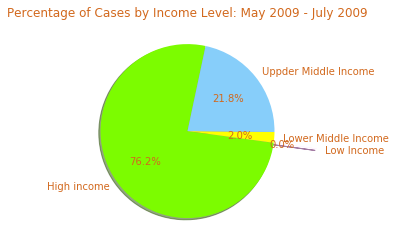
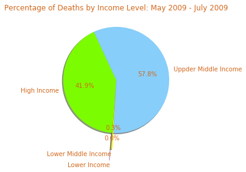
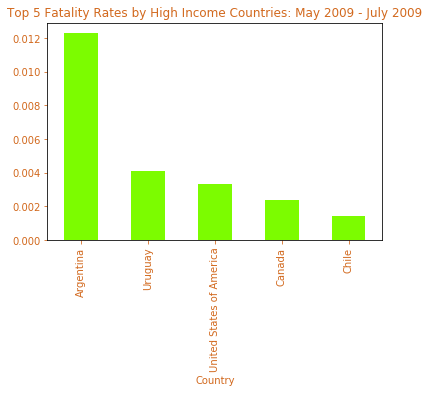
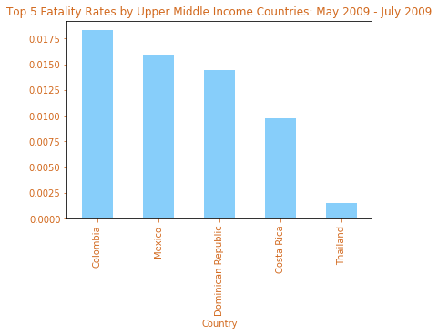
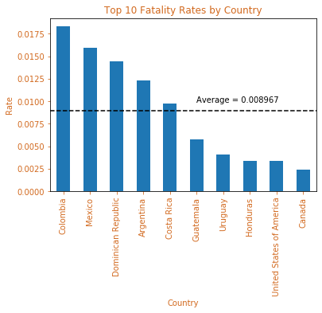

IMPACT OF H1N1 BASED ON ECONOMIC CLASS (INCOME LEVELS)
What is the correlation between economic health of a country and impact of H1N1?
Income Groups: High Income, Upper & Lower Middle Income, Low Income

H1N1 Cases by Income Levels
Hypothesis: Countries with higher income would experience a lower fatality rate and have more efficient recovery.

H1N1 Deaths by Income Levels
Based on further evaluation, H1N1 invoked a severe impact on High Income & Upper Middle-Income countries. Even with ample resources available in High Income & Middle Income countries, the virus was able to take a heavy toll. Therfore, correlation to income levels was low given what we found.

Fatality Rates by High Income Class
Central Americas appears as the epicenter, likely due to geography & dense population. Because the intial spread of the virus can be tracked to Mexico, the surrounding Central American countries were hit the hardest which is evident from our analysis.

Fatality Rates by Middle Income Class
Because reported numbers represented only confirmed cases, they were a "very great understatement" of the total number of cases of infection, according to the CDC.

Fatality & Recovery Rates By Country
Conclusion: While having proper resources in place and funding available to provide resistance against spread, the impact was not seen until a vaccine was created and testing was ramped up.